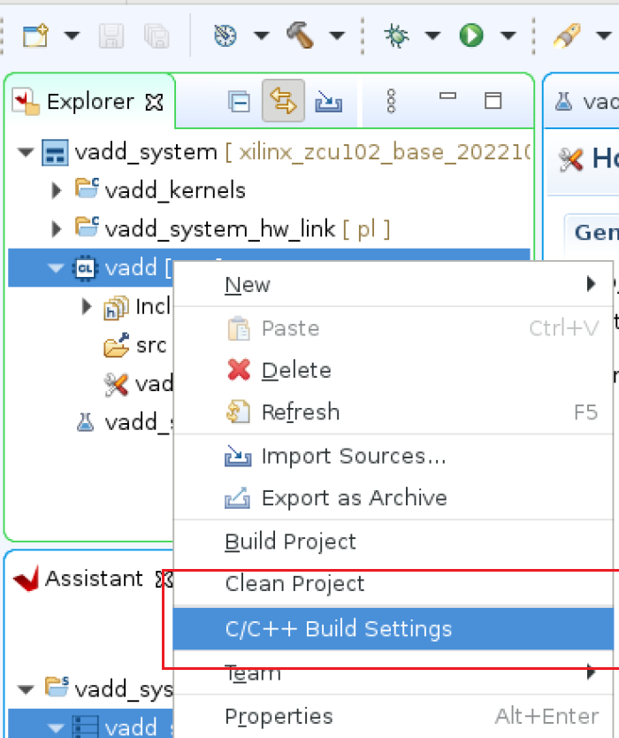
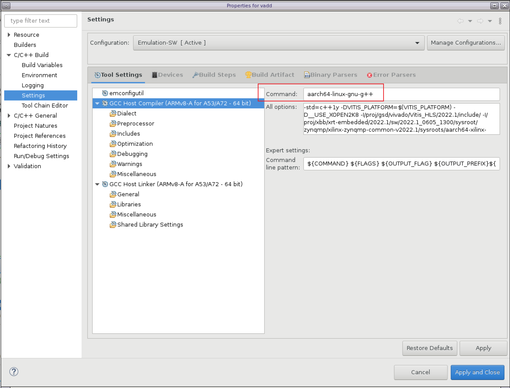

Vitis Accelerator Flow Example - Adding VADD Accelerator using Vitis GUI¶
This example provide an example for developers who want to add an acceleration application into existing released SOM platforms using Vitis GUI. By default, the released platforms and applications uses a Makefile flow (example here). However, this example shows an alternative way to add accelerator applications using Vitis IDE. We will import a Vitis Platform into Vitis and insert an acceleration application there. Xilinx prebuilt KV260 platform examples and their associated applications are:
| Application | Platform |
|---|---|
| smartcam | kv260_ispMipiRx_vcu_DP |
| aibox-reid | kv260_vcuDecode_vmixDP |
| defect-detect | kv260_ispMipiRx_vmixDP |
| nlp-smartvision | kv260_ispMipiRx_rpiMipiRx_DP |
This example adds a VADD acceleration application into kv260_ispMipiRx_DP used by nlp-smartvision and uses 2022.1 tools. You can use any of the released platforms to try out the example. Note an overlay and its application needs to be both present for an acceleration application to execute. Since we are inserting the VADD accelerator without the original NLP-smartvision overlay, the original smartvision applications will not work on this newly generated overlay.
Obtaining Platform¶
Since we are altering an existing platform, we will first get the platform - kv260_ispMipiRx_DP. Detailed tutorial is at Creating Vitis Platform. Here are the specific commands to generate the platform:
git clone --branch xlnx_rel_v2022.1 --recursive https://github.com/Xilinx/kria-vitis-platforms.git
cd $workdir/kria-vitis-platforms/kv260/platforms
source <vitis path>/settings64.sh
make platform PFM=kv260_ispMipiRx_rpiMipiRx_DP
The platform we will need in later steps will be available now in $workdir/kria-vitis-platforms/kv260/platforms/xilinx_kv260_ispMipiRx_rpiMipiRx_DP_202210_1.
Optional step¶
Up to 2022.1(this will be fixed in 2022.2.), Vitis still tries to generate sd_card.img even if .bif file is empty - resulting in an error ERROR:BootGen - syntax error when doing step 7 of “Generating overlay in Vitis”. This error is harmless - all the needed files are still generated. However, to avoid the error, you can populate $workdir/kria-vitis-platforms/kv260/platforms/xilinx_kv260_ispMipiRx_rpiMipiRx_DP_202210_1/sw/kv260_ispMipiRx_rpiMipiRx_DP/boot/linux.bif with below content, assuming that your kv260-vitis/ and xilinx-k26-starterkit-v2022.1/ are both top level in $workdir:
the_ROM_image:
{
[fsbl_config] a53_x64
[bootloader] <../../../../xilinx-k26-starterkit-2022.1/images/linux/zynqmp_fsbl.elf>
[pmufw_image] <../../../../xilinx-k26-starterkit-2022.1/images/linux/pmufw.elf>
[destination_cpu=a53-0, exception_level=el-3, trustzone] <../../../../xilinx-k26-starterkit-2022.1/images/linux/bl31.elf>
[load=0x00100000] <../../../../xilinx-k26-starterkit-2022.1/images/linux/system.dtb>
[destination_cpu=a53-0, exception_level=el-2] <../../../../xilinx-k26-starterkit-2022.1/images/linux/u-boot.elf>
}
Downloading Sysroot for Ubuntu OS¶
Ubuntu users can download the sysroot for the corresponding version they are using here, make sure to download the 22.04 sysroot for this example since our target will be running Ubuntu 22.04.
Unlike PetaLinux 2021.1, Ubuntu sysroot already have xrt installed so you dont need to regenerate. But the README.md file has information on re-generating sysroot in case other libraries are needed.
Unzip the sysroot file:
cd $ubuntu
tar -xf iot-limerick-kria-classic-desktop-2204-x06-20220614-78-sysroot.tar.xz
The <target sysroot> is $ubuntu/sysroots/aarch64-xilinx-linux
Generating Overlay in Vitis - Hardware¶
Start Vitis, and select
Create Application Projects, skip the welcome pageIn
Select a platform from repository, click+ Addand navigate to the folder containing.xpfmfile in$workdir/kv260-vitis/platforms/xilinx_kv260_ispMipiRx_DP_202110_1and clickOpen. this will open the .xpfm file and its associated platform. clickNext
Name the project
vadd, clickNext.In Domain page:
Set Domain to
smp_linuxSet
Sys_root pathto<target sysroot>.Leave
Root FSemptyLeave
Kernel Imageemptyclick Next
Select
Acceleration templates with PL and AIE accelerators -> Simple Vector Additionand clickFinishto generate the application.In the Explorer window double click the vadd_system->vadd->vadd.prj file to open it, change the Active Build configuration from Emulation-SW to Hardware.
Select
vadd_systemin Explorer window and Click Build icon in toolbar. The build task would take 10-30 minutes. When build completes, the build result is located invadd_system/Hardware/directory. Note that if step 8 in section “Create Sysroot” was not performed, there will be an error and it can be ignored.vadd_system_hw_link/Hardware/binary_container_1.build/link/int/system.bit: PL bitstream including vadd kernel and platform components.
vadd_system_hw_link/Hardware/binary_container_1.xclbin: Acceleration binary container for XRT configuration. It includes metadata that describes the kernels.
Usually, vadd/Hardware/vadd will contain the compiled application, but in this case the software generation portion will have an error:
fatal error: bits/libc-header-start.h no such file
Please ignore this for now, we will address this in “Compiling application - software” section.
The bitstream needs to be in bin format so that fpgamanager can load it. Convert
.bitfile to.bit.binfile with the following commands.cd vadd_system_hw_link/Hardware/binary_container_1.build/link/int/ echo 'all:{system.bit}'>bootgen.bif bootgen -w -arch zynqmp -process_bitstream bin -image bootgen.bif mv system.bit.bin vadd.bit.bin
Compiling application - software¶
The native g++ compiler used by Vitis is not compatible with the Ubuntu 22.04 sysroot. In order to compile the software, we need to use Ubuntu 22.04 tool chain (aarch64-linux-gnu-g++) instead of Vitis tool chain.
22.04 Ubuntu Host¶
If you happen to be running Vitis on Ubuntu 22.04 (note that this is not officially supported), you can first run these commands to install the tools:
sudo apt update
sudo apt install crossbuild-essential-arm64
This should install tool chain and you will see files including /usr/bin/aarch64-linux-gnu-g++, add the installed folder to your $PATH.
In Vitis, open the project with vadd again. Right click vadd -> C/C++ Build Settings:

And give the path of /usr/bin/aarch64-linux-gnu-g++ for both compiler and linker before rebuilding the software by right clicking on vadd -> build project.


20.04 Ubuntu Host¶
If you are using a 20.04 Ubuntu Host, there’s a CHROOT workaround to compile with a Ubuntu 22.04 tool chain. Please refer to [Wiki](need to getlink for this!!!!!!!!!)
Obtaining .dtbo File¶
You can download the corresponding .dtsi file (in this case, nlp-smartvision from kv260_firmware 2022.1 release and compile them using command below. For more information on dtc please refer to dtsi_dtbo_generation:
dtc -@ -O dtb -o vadd.dtbo kv260-nlp-smartvision.dtsi
Output is vadd.dtbo.
Create shell.json¶
Prepare shell.json. You can copy it from other applications or create one with the following contents.
{
"shell_type" : "XRT_FLAT",
"num_slots": "1"
}
Test Application¶
Transferring the files to the board
Make sure the Ethernet cable of SOM Starter Kit is connected. Use SCP or SFTP to upload the files from host to target board.
# Running on host machine scp vadd.dtbo vadd.bit.bin shell.json vadd binary_container_1.xclbin ubuntu@<SOM Starter Kit IP>:/home/ubuntu/note that the vadd file above is a file generated in section “Compiling application - software”.
Load the hardware on target
# Running on target board sudo mkdir /lib/firmware/xilinx/vadd cd /home/ubuntu sudo mv vadd.dtbo vadd.bit.bin shell.json /lib/firmware/xilinx/vadd/ sudo xmutil listapps sudo xmutil unloadapp sudo xmutil loadapp vadd
Run Vector Addition Application on the Board
Run vadd application
chmod +x ./vadd ./vadd binary_container_1.xclbin
It should show program prints.
xilinx-k26-starterkit-2021_1:~$ ./vadd binary_container_1.xclbin INFO: Reading binary_container_1.xclbin Loading: 'binary_container_1.xclbin' TEST PASSED
Congratulations, you have added an accelerator to an existing Platform!
This tutorial is based on Vitis GUI based Vitis Platform flow example, but we do not follow many of the steps that create and set-up the platform in Vivado since we use prebuilt platform.
License¶
Licensed under the Apache License, Version 2.0 (the “License”); you may not use this file except in compliance with the License.
You may obtain a copy of the License at http://www.apache.org/licenses/LICENSE-2.0
Unless required by applicable law or agreed to in writing, software distributed under the License is distributed on an “AS IS” BASIS, WITHOUT WARRANTIES OR CONDITIONS OF ANY KIND, either express or implied. See the License for the specific language governing permissions and limitations under the License.
Copyright© 2021 Xilinx